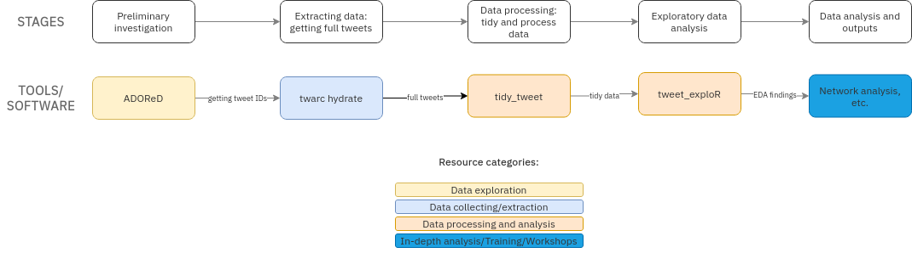

The Australian Digital Observatory (ADO) is curating an ecosystem of resources for researchers working with digital human data from the internet. This ecosystem is intended to be useful to a wide range of disciplines, particularly humanities and social sciences, data science, public health, business, law, and many others.
Research projects are, by definition, all unique: the very purpose of research is to make new contributions. Therefore, there is no one-size-fits-all system for obtaining and pre-processing research data, especially in the humanities and social sciences. However, there are many overlapping methods and skills that are part of the research data lifecycle including (but not limited to) collecting, tidying, analysing, and publishing data.
The ADO ecosystem aims to equip researchers with a set of modular, open source, interoperable methods and processes to assist with these tasks. Researchers can engage with and benefit from the ADO ecosystem by accessing tools, training, and project support services.
This modular ecosystem approach gives flexibility, allowing researchers to pick and choose resources that are relevant and suitable for them, without being locked in to a specific stack (e.g., proprietary formats/tools, specific cloud infrastructure). The modular approach also recognises different entry levels in terms of researchers’ skills and needs. Furthermore, smaller tools are easier to maintain, and focusing on modularity and interoperability allows making use of and supporting existing tools and resources already in the community rather than reinventing the wheel.
In designing and curating the ADO ecosystem, we take inspiration from the open source software community and the Unix philosophy of designing interoperable tools that each do one thing well, and from foundational tooling ecosystems such as the R Tidyverse, which has well demonstrated the suitability of such a structure to the academic research environment. We hope to learn from these communities, and also to contribute back to them.
The ADO ecosystem aims to support researchers to make use of dynamic digital human data on the internet. This includes social media data, review websites, blogs, shared knowledge bases such as Wikipedia, and forums such as Reddit. Data collected from these sources can include the written words, metadata, platform structures and affordances, user contributions/changes - basically any and all of the facets of data that make up our digital internet activities.
Working with dynamic digital human data on the internet poses a number of challenges, especially for researchers from disciplines that traditionally do not require computational methods. These data-centric challenges can be framed in terms of the research lifecycle activities: explore; collect; tidy and model; store and organise; analyse; and publish. The ADO ecosystem provides resources to help researchers address these challenges in the form of:
Here are some examples of research workflows that benefit from our ecosystem approach.
A researcher is interested in the Twitter conversation around Australia’s federal election. The workflow for answering this problem would include a preliminary feasibility check (to ensure there are sufficient data for analysis), followed by data collection, processing, and analysis. To implement this workflow, we use the following tools:
The chart below illustrates the research workflow, as well as the specific tools used in each phase.

Many research projects require data from multiple sources. For example, a researcher is interested in the dynamics and development of content and networks related to the Critical Race Theory in light of the Black Lives Matter movement. Analyses would require data from Twitter, Youtube, Reddit, Wikipedia, as well as scholarly citation networks. A set of different bespoke tools are developed and used to support this workflow:
The ADO Ecosystem is a part of a broader community and ecosystem of open source or openly licensed resources and methods. We’d like to share a list of projects whose work we make use of in our own resources, and which we also frequently recommend to researchers to use either with our workflows or in their own right.
Data collection resources:
Data analysis resources:
Data storage and organisation tools:
Computational skills for research resources:
Foundational open source projects and communities:
The current state of the ADO ecosystem is just the start of our journey! We plan to continue creating more tutorials, tools, documented workflows, and more, as well as refining and developing the resources already published so that they stay relevant and useful to researchers’ needs. We always love to hear from researchers and the rest of the community so that we can share, discuss, and work together to solve problems and enable research. Reach out to us anytime, and watch this space!